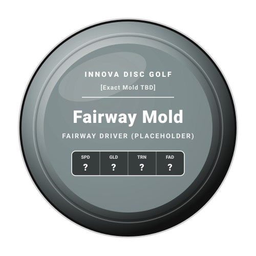

Slot Under Evaluation

Innova Champion Discs
Innova Fairway Mold
Speed
?
Glide
?
Turn
?
Fade
?
- Candidate Molds: Eagle vs. Leopard3
- Stability: To Be Confirmed
- Recommended Skill: TBD Based on Mold
- Evaluation Status: Active Field Testing
- Bag Slot: Neutral Fairway Placeholder
Notice: This fairway driver slot is an active placeholder. We are currently field-testing between an Innova Leopard3 (7, 5, -2, 1) and an Innova Eagle (7, 4, -1, 3) to finalize our straight-to-turnover gap shooter. Official specs will be updated once selection is locked.
Intended Fairway Use & Shot Role
Wooded hyzer-flips and gentle fairway placement between the TeeBird and Roadrunner slots.